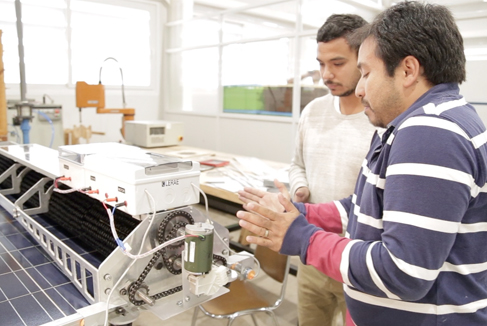
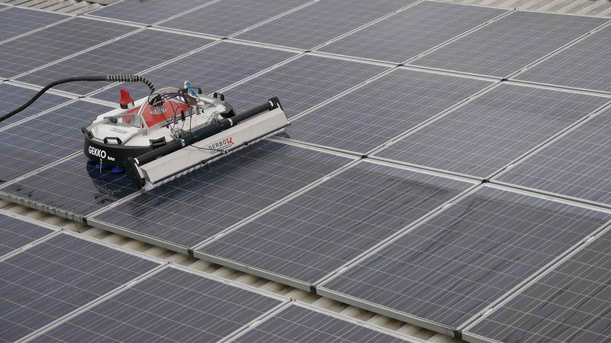

La Universidad de Talca, en Chile, ha creado un robot que limpia paneles solares de forma autónoma con muy poco consumo de agua. Un equipo de la Facultad de Ingeniería de la Universidad de Talca, en Chile, (UTALCA) liderado por el profesor Javier Muñoz, especialista en ingeniería solar, trabaja en conjunto con alumnos de la carrera de Ingeniería Civil Mecatrónica y del Doctorado en Sistemas de Ingeniería. Entre todos, están desarrollando una serie de innovaciones que buscan resolver algunos de los requerimientos de la industria fotovoltaica.
1.Alta eficiencia de limpieza: 4 veces más rápido que manualmente
2.Limpieza precisa: con calidad uniforme
3.Techos empinados incluidos: hasta 45
4.Mejora la seguridad mejorada: no se realizan trabajos en la parte superior de los techos
5.Manejo sencillo: manejo con joystick y control remoto
El robot GEKKO Solar está diseñado para limpiar paneles fotovoltaicos en tejados y pequeñas granjas solares. Es compacto y versátil y fácil de transportar de un lugar a otro. Por lo que se adecua perfectamente a las necesidades de empresas de limpieza, que ofrecen su servicio a los propietarios de plantas fotovoltaicas.
El robot GEKKO Solar limpia rigurosamente con sus cepillos rotativos y agua desmineralizada, ejecutando una presión constante sobre los paneles.
GEKKO Solar también es adecuado para pequeñas granjas solares con paneles angostos. En este caso, un carro de apoyo que suministra agua, energía eléctrica y aire asegura la operación independiente del mismo.
